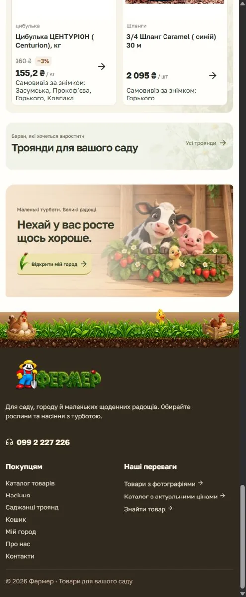
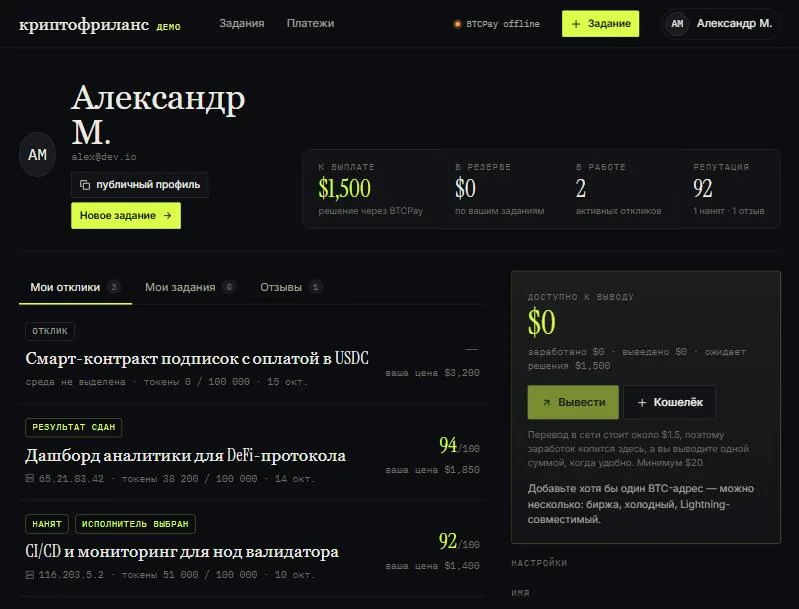
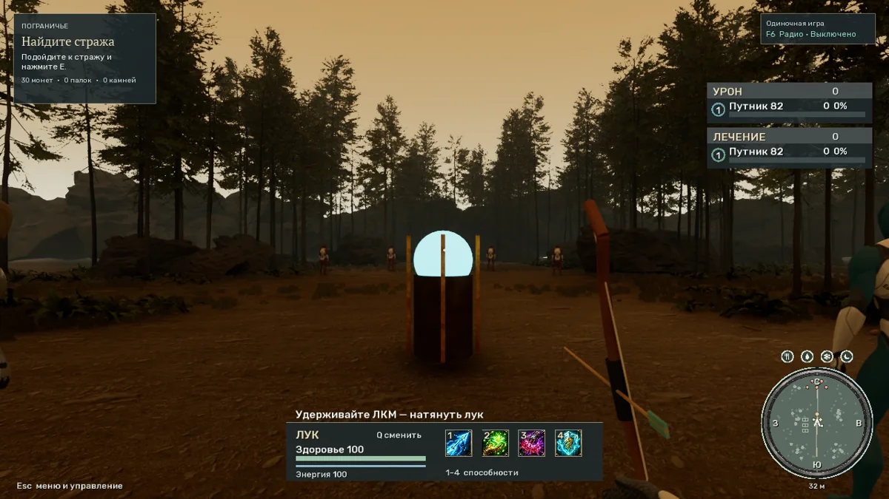
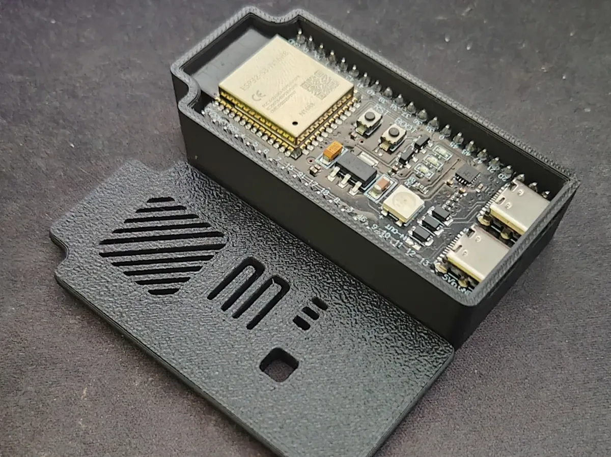
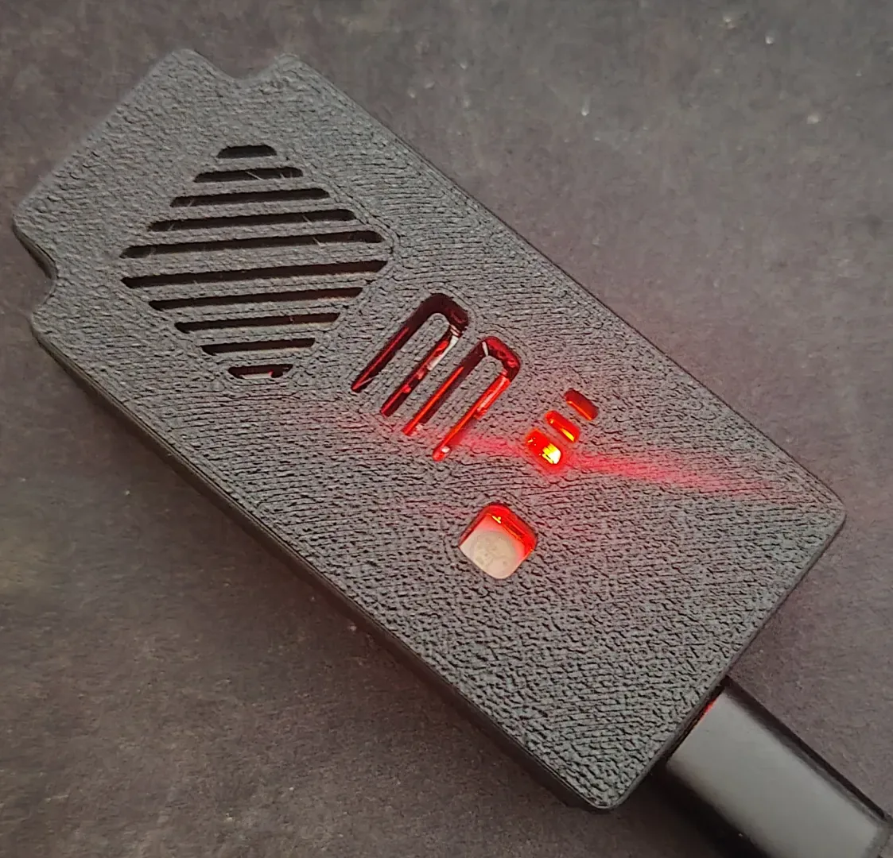

From Feb 2020 · former role
Senior PHP Developer · TCB Hard + Software
PHP platform development and modernisation. The exact end date is not confirmed in the available CV records.
Resume Profile
PHP · Laravel · Symfony · Vue.js · TypeScript · AI-assisted product development
Download one-page PDF CV See projects ↓ Work history ↓
Full-stack engineer with more than 10 years of commercial PHP experience. I work across PHP, Laravel, Symfony, Vue.js, JavaScript and TypeScript, building and modernising web products, APIs and databases. I use AI tools across research, implementation and review, and can contribute as a developer or take technical ownership of a team and its architecture.
Experienced in building systems that must operate reliably under real-world constraints: high load, distributed devices, unstable networks, long lifecycle products, and evolving business requirements.
Strong at:
I work across application code, infrastructure and connected devices, and I enjoy learning the tools a problem calls for.
Distributed video platform: Worked on a high-load platform spanning Android and TV applications and RockPi-based set-top devices. The work included video driver development and playback on ARM, Chromium and Mali, plus remote operation of thousands of devices over OpenVPN with network and certificate management.
Roles are listed by their documented start dates. Some 2019 projects overlap.
PHP platform development and modernisation. The exact end date is not confirmed in the available CV records.
Laravel backend and Vue/TypeScript frontend.
PHP development in the MediaWiki / BlueSpice ecosystem.
MediaWiki / BlueSpice work; Docker, Tomcat and NPM in the project stack.
Laravel dashboards and marketplace APIs.
Laravel, Vue.js and MySQL product development.
Search optimisation and web delivery.
AI-NATIVE ENGINEERING
I design AI-native engineering workflows where AI agents support the full delivery loop: problem framing, planning, implementation, testing, code review, deployment, monitoring, and support — with human ownership, validation, and production reliability.
HOW I WORK
SELECTED WORK
A few screens and devices from work across frontend, backend, games and electronics.

Panel for managing reverse proxy routes and seeing the containers behind them, with validation and rollback before reload.

Storefront and operational software for a farming marketplace.

Task and account dashboard for a freelance platform.

Playable game scene with HUD, targeting and world systems.

Board, enclosure and device prototyping.

Hands-on prototyping, soldering and debugging with ESP32, RS-485 and CAN interfaces. Work on local device control and home automation, including an air-conditioner integration project.

TECHNO PUNCH
My electronic music: composition, production and visual presentation.
If you would like to discuss a role, project or collaboration, send me a message directly.
📧 Email: jenyaukraine@gmail.com
💻 GitHub: github.com/jenyaukraine